السلسلة 24
السيارة (صنف B) · 40 سؤال بالصوت. حاول تجاوب بوحدك، من بعد شوف الجواب.
السؤال 1
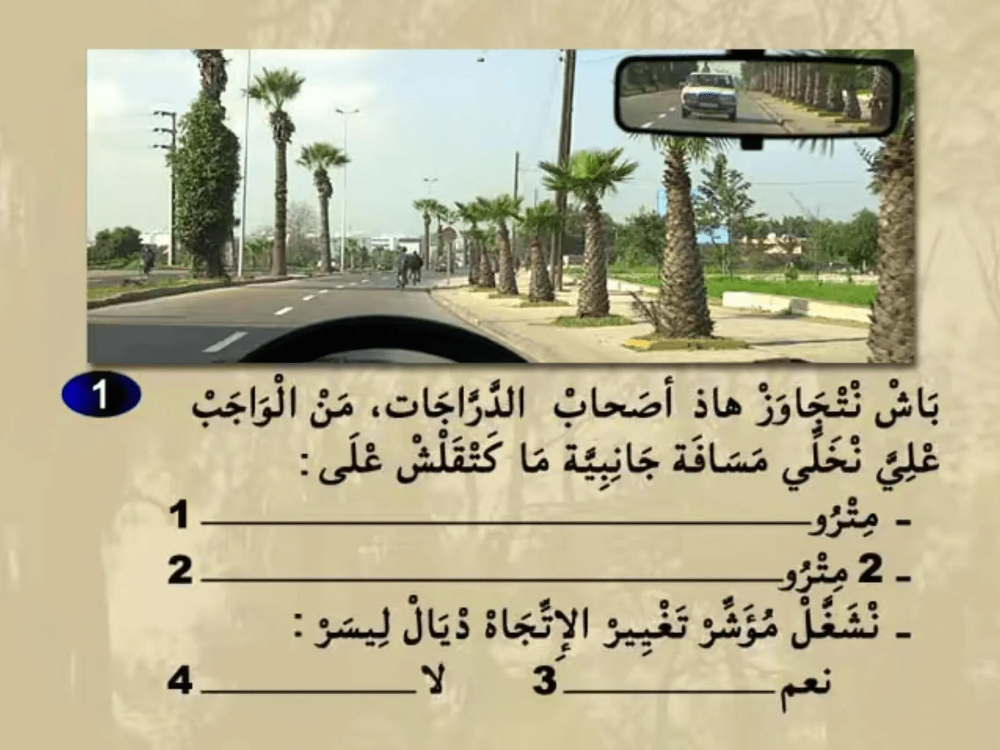
بيّن الجواب
الجواب الصحيح: 1 و 3
داخل التجمعات السكنية لكي أقوم بتجاوز أصحاب الدراجات فيجب عليّ ترك مسافة جانبية لا تقل عن متر واحد (خارج التجمّعات السكنية للتجاوز أترك مسافة جانبية متر ونصف)، وبطبيعة الحال يجب عليّ تشغيل مؤشّر تغيير الإتجاه لليسار بما أنني سوف أقوم بعملية التّجاوز.
السؤال 2
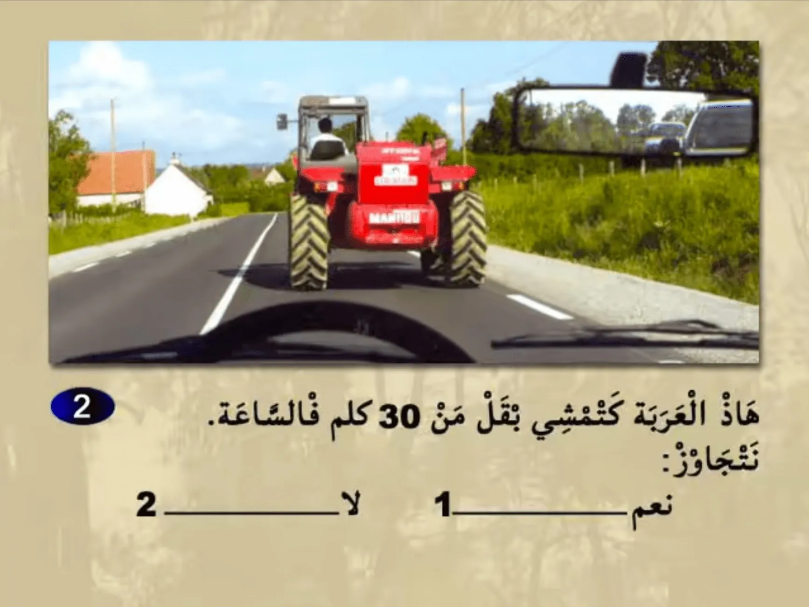
بيّن الجواب
الجواب الصحيح: 2
الخط متّصل إذن لا يمكنني أن أقوم بعملية التّجاوز.
السؤال 3
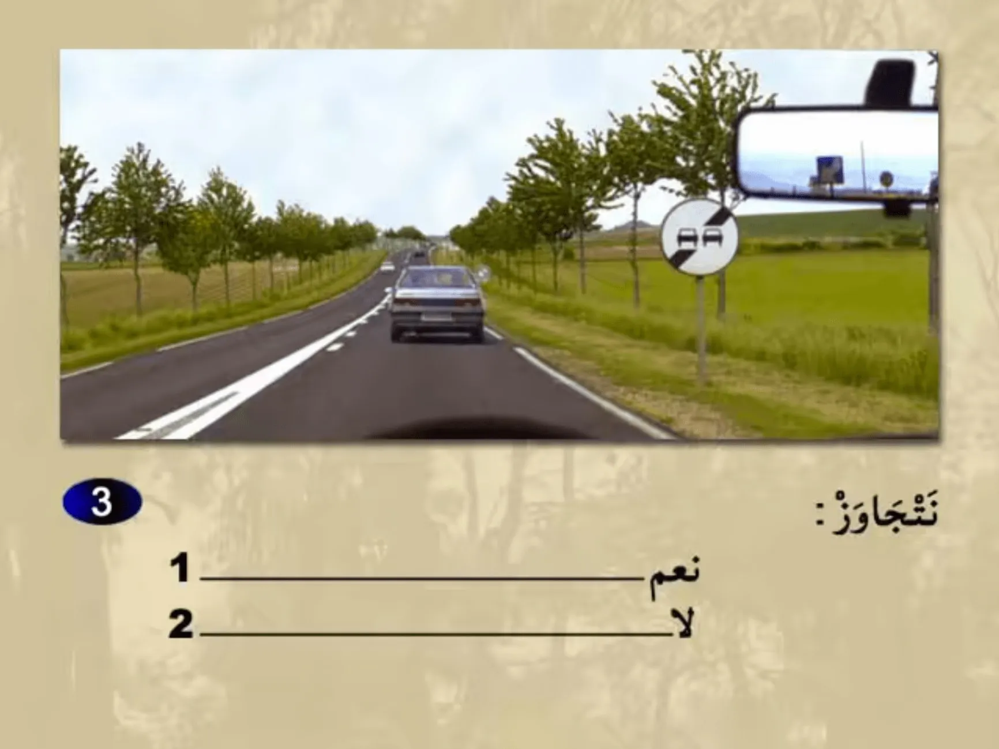
بيّن الجواب
الجواب الصحيح: 2
الإشارة الطّرقية العمودية فهي تعني نهاية منع التّجاوز، يعني أنه إبتداء من الإشارة الطّرقية فيمكنني أن أتجاوز، والمنع الذي كان سابقا إنتهى. لكن كما نلاحظ فيوجد عربة قادمة في الإتّجاه المعاكس، لذلك لا يمكنني أن أتجاوز.
السؤال 4
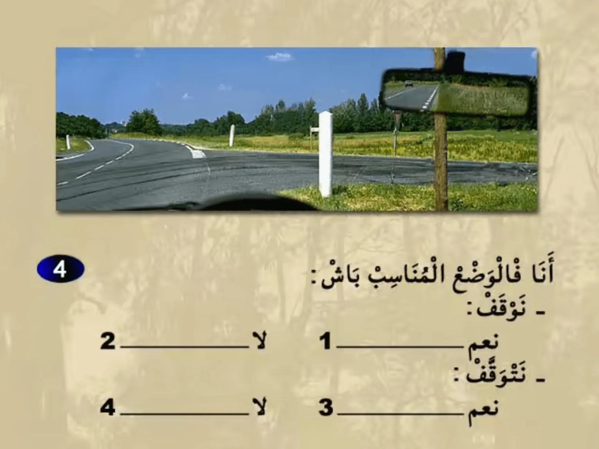
بيّن الجواب
الجواب الصحيح: 2 و 4
بالنسبة للأرمة المتواجدة في الصورة فهي تشير إلى وجود ملتقى الطرق، وفي ملتقيات الطّرق فممنوع الوقوف والتوقّف.
السؤال 5
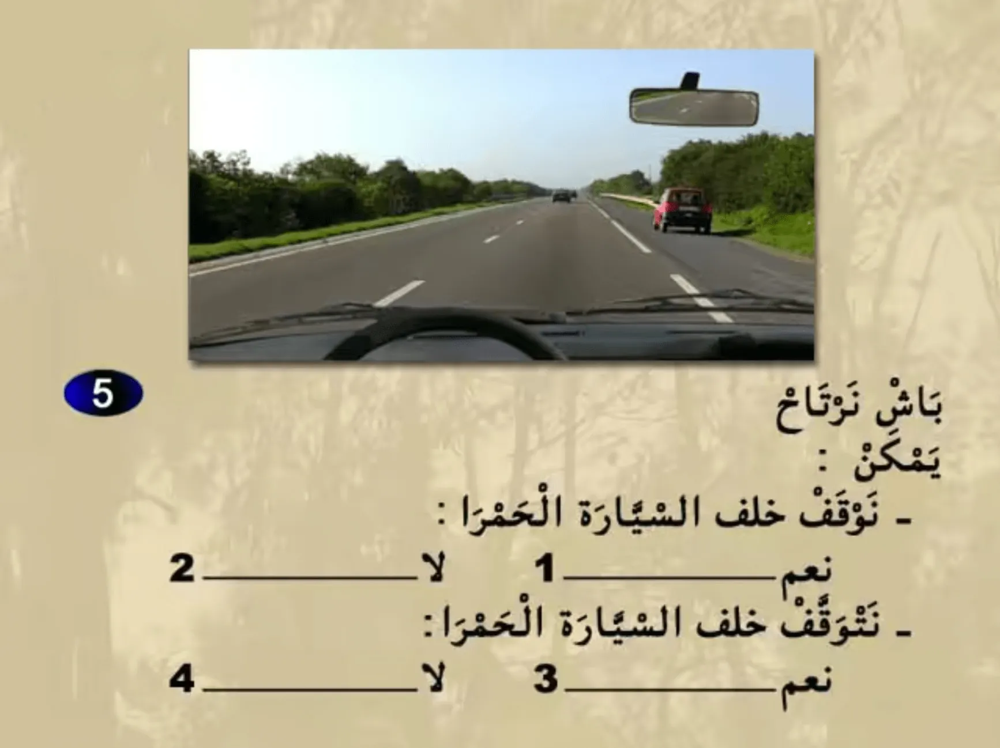
بيّن الجواب
الجواب الصحيح: 2 و 4
الصورة تظهر على أنني أتواجد في طريق سيّار، هذا واضح من خلال الخط المتّصل على اليسار وكذلك شريط التوقّف الإستعجالي الموجود على اليمين. القاعدة تقول على أنه في شريط التوقّف الإستعجالي فممنوع الوقوف والتوقّف إلاّ في حالة وجود عطب أو في الحالات الضرورية أو الإستعجالية، إذن لا يمكنني الوقوف خلف السيارة الحمراء لكي أرتاح ولا يمكنني كذلك التوقّف.
السؤال 6
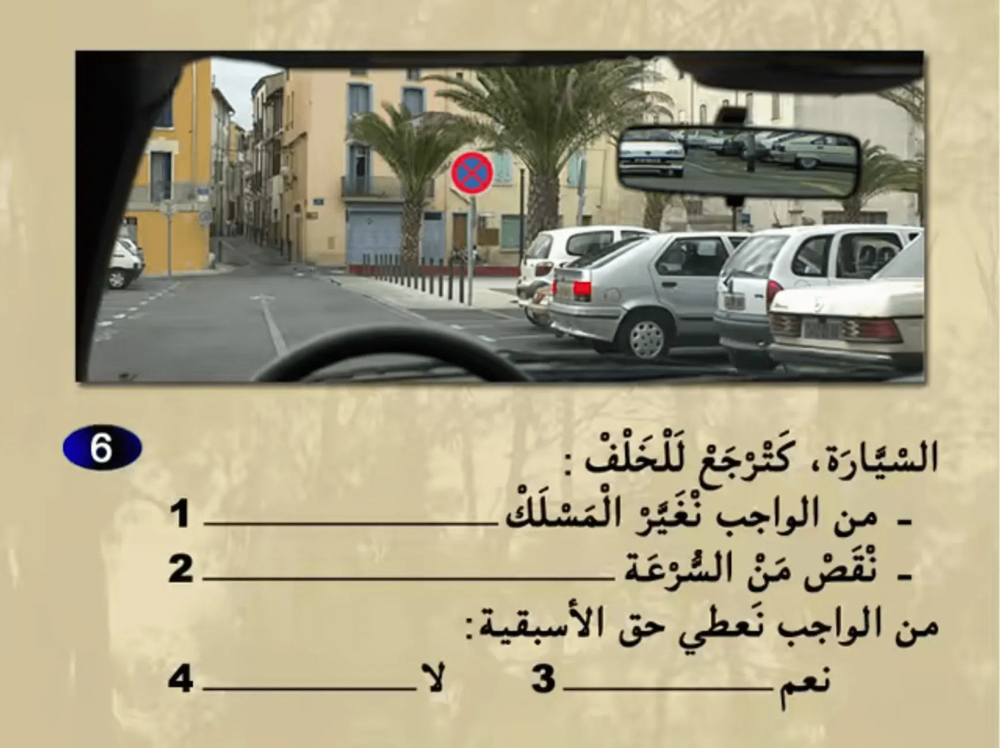
بيّن الجواب
الجواب الصحيح: 2 و 4
بما أن السيارة تقوم بالرجوع للخلف من موقف السيارات فليس لها حق الأسبقية، الأسبقية هنا لي أنا ويجب على سائق العربة الإنتظار لكي اقوم بالمرور أنا أولا، لذلك أقوم بالإنقاص من السرعة والمرور بدون تغيير المسلك. (بما أن العربة ترجع للخلف والرؤية صعبة بالنسبة لسائقها فيجب عليّ الإنتباه لأنه يمكن أن لا يلاحظ وجودنا، لذلك قمنا بالإنقاص من السرعة لكي نكون مستعدين إذا كان هنالك خطر).
السؤال 7
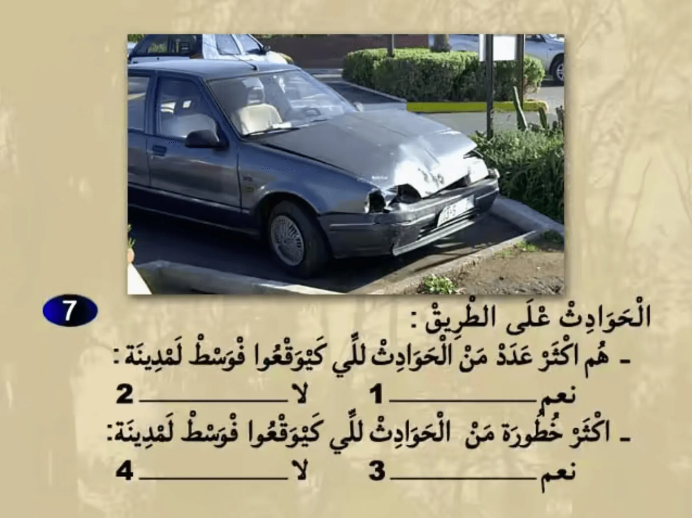
بيّن الجواب
الجواب الصحيح: 2 و 3
يقصد بالسؤال هنا الحوادث التي تقع في المدينة وخارج المدينة، إذن الحوادث على الطريق (خارج المدينة) فهي ليست أكثر عدد من الحوادث التي تقع وسط المدينة، لأنه في وسط المدينة حركة السير مزدحمة والحوادث تقع بكثرة ولكنها ليست خطيرة لأن سرعة العربات لا تكون كبيرة. ولكن بخصوص خطورة الحوادث فبطبيعة الحال الحوادث التي تقع على الطريق (خارج المدينة) فهي أكثر خطورة لان سرعة العربات تكون كبيرة وهطورة الحوادث أكثر. إذن الإجابة الصحيحة هي 2 و 3.
السؤال 8
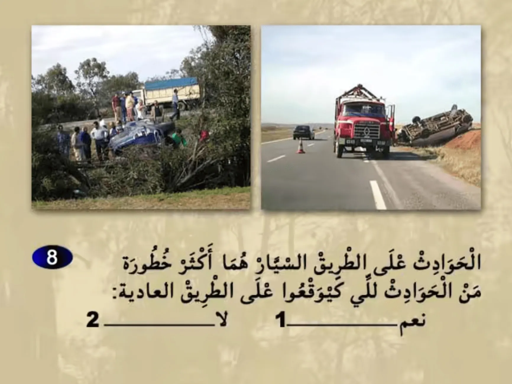
بيّن الجواب
الجواب الصحيح: 1
بطبيعة الحال فخطورة الحوادث على الطريق السيار فهي أكبر من الطريق العادية (الطريق الوطنية) لأنه في الطّريق السّيار فالسرعة القصوى هي 120 كلم في الساعة، وفي الطّريق العادية (طريق وطنية) فالسرعة القصوى هي 100 كلم في الساعة.
السؤال 9
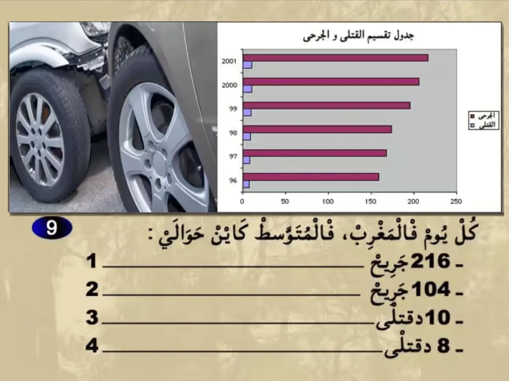
بيّن الجواب
الجواب الصحيح: 1 و 3
كما يوضح المبيان الخاص بتقسيم متوسط الجرحى والقتلى في المغرب، فنجد أنه متوسط الجرحى هو 216 جريح كل يوم و متوسط القتلى كل يوم هو 10 قتلى.
السؤال 10
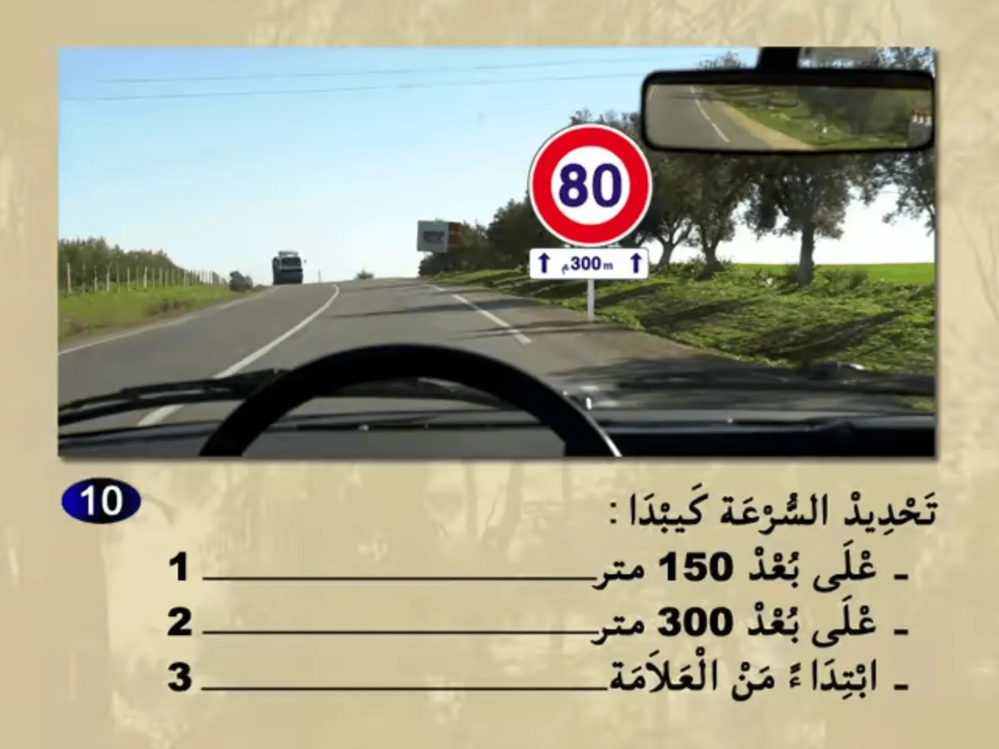
بيّن الجواب
الجواب الصحيح: 3
بالنسبة للإشارات الطّرقية الخاصة بالمنع فهي تطبّق من عند العلامة، والعلامة التّكميلية التي توجد أسفل إشارة تحديد السرعة فهي لا تعني أن تحديد السرعة سوف يبدأ على بعد 300 متر، لكن تلك الأسهم تعني على أن تحديد السرعة في 80 كلم في الساعة فهو على طول 300 متر أو على إمتداد 300 متر أو على مسافة 300 متر (وليس على بعد 300 متر).
السؤال 11
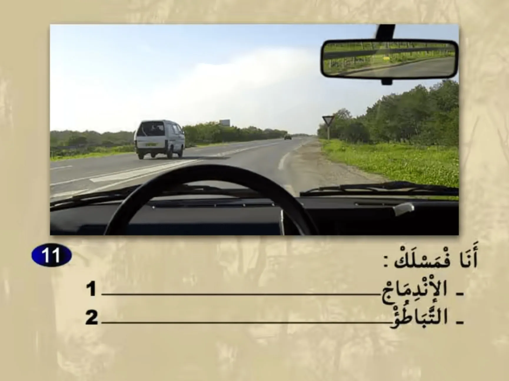
بيّن الجواب
الجواب الصحيح: 1
توجد إشارة عمودية في الأمام (ليس لي حق الأسبقية) في هذه الحالة نحن في مسلك الإندماج، يعني على أننا نستعد للإندماج في حركة السّير. (بالسنبة لمسلك التباطئ فهو المسلك عندما نكون نسير على الطّريق ونستعد للخروج في هذه الحالة نستعمل مسلك التباطئ). إذن مسلك الإندمج هو المسلك الذي أستعمله عندما أريد الإندماج في حركة السّير، ومسلك التباطئ فهو المسلك الذي نستعمله عندما نريد الخروج.
السؤال 12
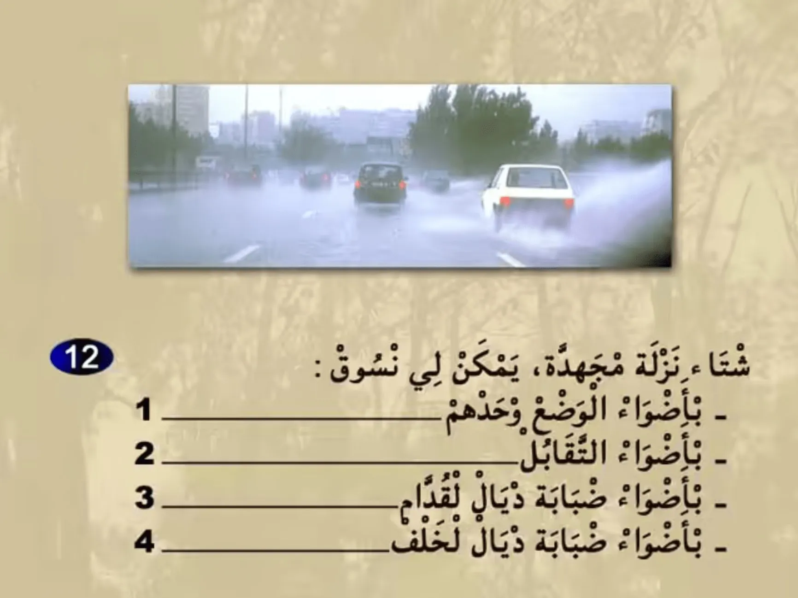
بيّن الجواب
الجواب الصحيح: 2 و 3
لا يمكن إختيار الإختيار الأول أضواء الوضع وحدهم لانه لا يمكننا السير بأضواء الوضع وحدهم خصوصا في حالة الطقس الممطر، من الواجب في مثل هذه الحالات أثناء سقوط المطر ان نقوم بإستعمال أضواء الوضع مع أضواء التقابل (ب 2) إذا كنا نريد إستعمال أضواء الوضع، ولا يمكن إستعمال أضواء الوضع وحدهم والسير بهم (لو كان الإختيار أضواء الوضع، بدون كلمة وحدهم فيمكننا إختيارهم) ، يمكننا كذلك إستعمال أضواء الضبابة الأمامية .
⚠️ ملاحظة: يمكن استعمال أضواء الوضع في آن واحد مع أضواء الطريق وأضواء التقابل والأضواء الخاصة بالضباب، ويمكن كذلك استعمالها وحدها عند وقوف المركبة أو توقفها أو عندما تكون ظروف الإنارة على الطرق، ماعدا الطريق السيار أو الطرق ذات المسالك الخاصة. الجواب الصحيح هو رقم 2 و 3.
السؤال 13
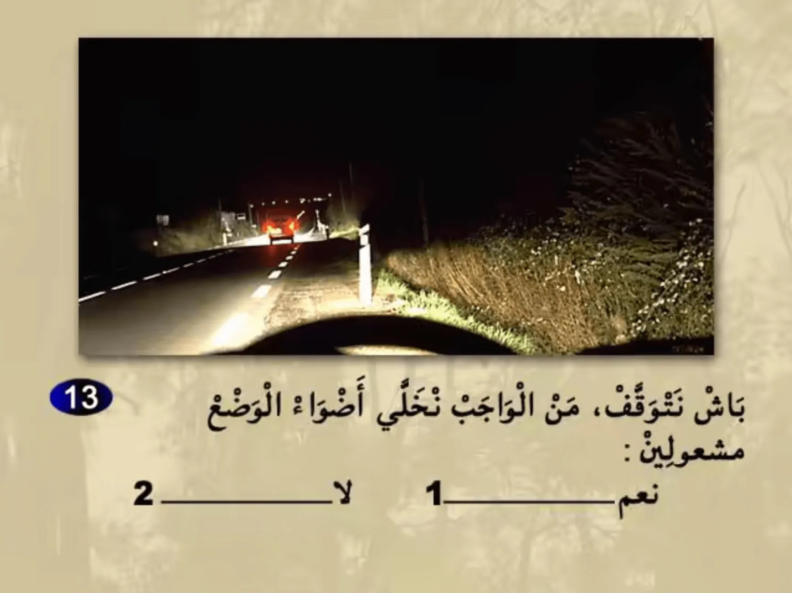
بيّن الجواب
الجواب الصحيح: 1
لكي أستطيع التوقّف في هذا المكان على جانب الطّريق (حاشية الطّريق) في الفترة الليلية فيجب عليّ تشغيل أضواء الوضع عند الوقوف (أضواء التوقّف هي أضواء الوضع).
السؤال 14
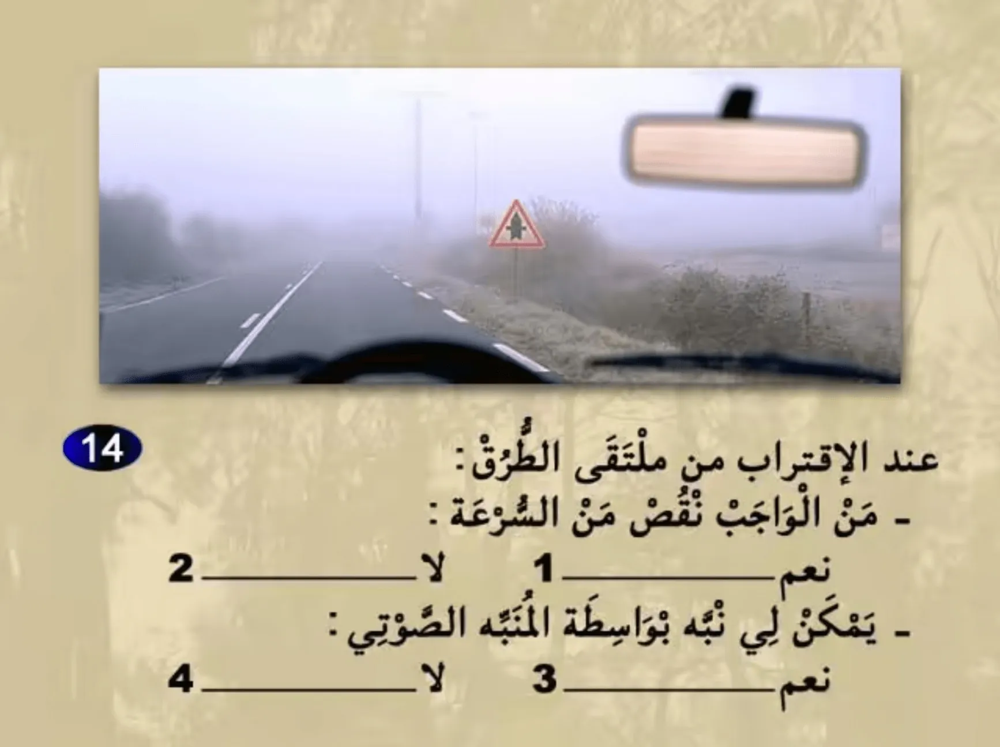
بيّن الجواب
الجواب الصحيح: 1 و 3
الإشارة الطّّرقية تعني إنتباه خطر طريق ذات أولوية، وبما أنني خارج التجمع السكني إذن بعد 150 متر سوف أجد ملتقى الطّرق، ولديّ حق الأسبقية فيه كما تشير إليه الإشارة الطّرقية. وعند ملتقيات الطّرق فيجب عليّ الإنقاص من السرعة. وبما أنني خارج التجمّع السكني والرؤية غير واضحة بسبب الضباب فيمكنني التّنبيه بالمنبّه الصوتي. (لأن إستعمال أضواء الطّريق للتنبيه لن تظهر بسبب الضباب لذلك يمكنني إستعمال المنبّه الصوتي).
السؤال 15
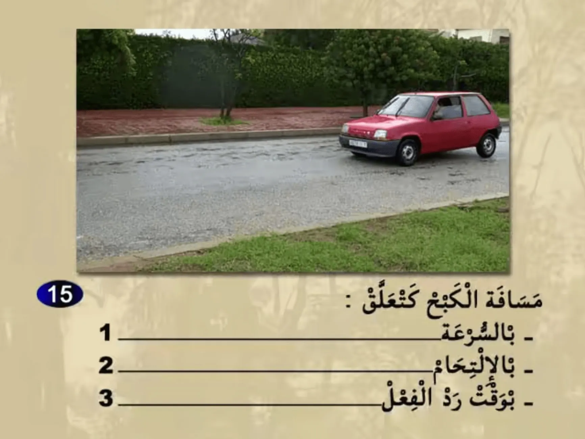
بيّن الجواب
الجواب الصحيح: 1 و 2
مسافة الكبح (تسمى كذل مسافة الوقوف أو الحصر أو الفرملة) وهي المسافة التي أبدا فيها بإستعمال الفرامل إلى أن أتوقف، وهي تتعلق بالسرعة (كلما كانت السرعة كبيرة فمسافة الكبح تكون أطول، والعكس صحيح) كذلك لها علاقة بالإلتحام (الإلتحام هنا يعني أن تَماس العجلات مع الطّريق، لو كانت العجلات جيدة والطّريق ناشفة إذن فمسافة الكبح تكون طبيعية، لكن لو كانت العجلات إطاراتها غير جيّدة والأرضية مبللة فمسافة الكبح سوف تطول، إذن الإلتحام كذلك لديه علاقة بمسافة الكبح) بالنسبة لوقت رد الفعل فليس لديه أي علاقة بمسافة الكبح.
السؤال 16
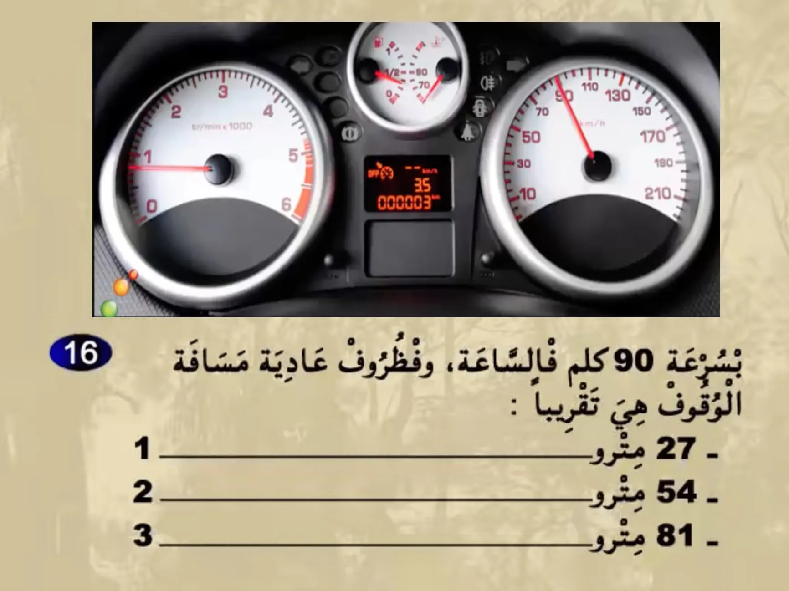
بيّن الجواب
الجواب الصحيح: 3
نسير في طريق ناشفة وبسرعة 90 كلم في الساعة، لحساب مسافة الوقوف في هذه الحالة فنقوم بحذف العدد الفردي وضرب ما تبقى من عدد في نفسه، في هذه الحالة سوف نقوم بحذف العدد الفردي والذي هو 0 ويتبقى لنا العدد 9. إذن نضرب العدد 9 في 9 والنتيجة هي 81. إذن إذا إظطررت للوقوف سوف أحتاج إلى مسافة 81 متر تقريبا للوقوف إذا كنت أسير بسرعة 90 كلم في الساعة.
السؤال 17
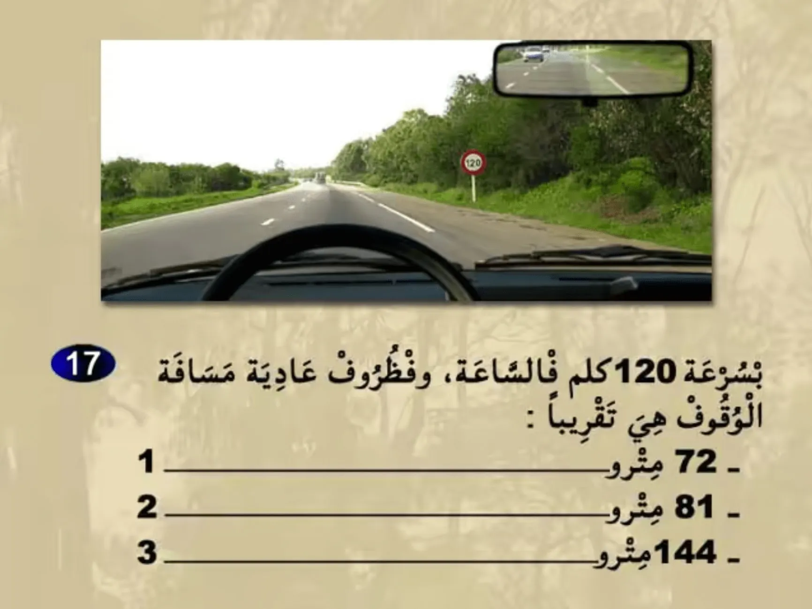
بيّن الجواب
الجواب الصحيح: 3
في ظروف عادية وبسرعة 120 كلم في الساعة، لحساب مسافة الوقوف في هذه الحالة فنقوم بحذف العدد الفردي وضرب ما تبقى من عدد في نفسه، في هذه الحالة سوف نقوم بحذف العدد الفردي والذي هو 0 ويتبقى لنا العدد 12. إذن نضرب العدد 12 في 12 والنتيجة هي 144. إذن إذا إظطررت للوقوف سوف أحتاج إلى مسافة 144 متر تقريبا للوقوف إذا كنت أسير بسرعة 120 كلم في الساعة.
السؤال 18
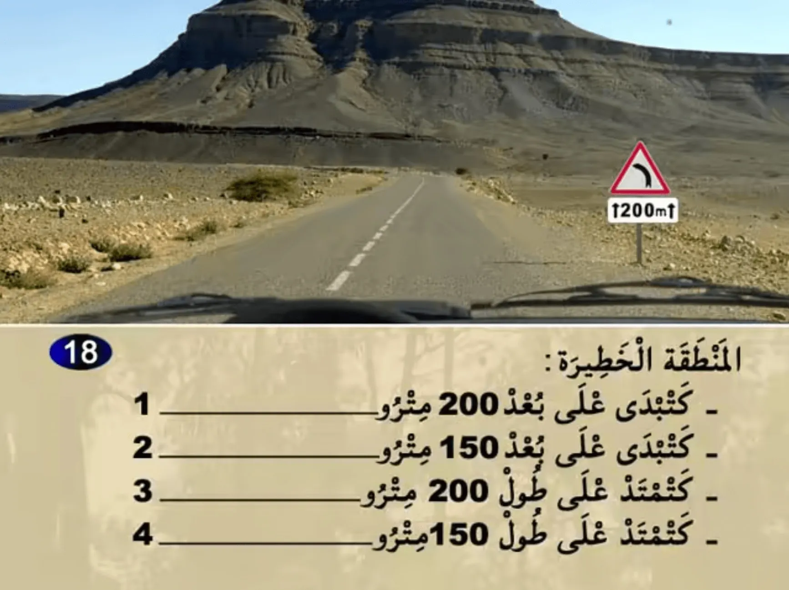
بيّن الجواب
الجواب الصحيح: 2 و 3
خطر المنعرج على اليسار على بعد 150 متر بما أننا خارج التجمّع الحضري. ولدينا كذلك علامة تكميلية تعني أن هذا الخطر سوف بكون على إمتداد 200 متر (أو على مسافة 200 متر أو على طول 200 متر)، إذن بما أننا خارج التجمّع الحضري فإن خطر المنعرج الخطير على اليسار سوف يبدأ بعد 150 متر وهذا الخطر سوف يمتد على مسافة 200 متر كما توضّحه العلامة التكميلية.
السؤال 19
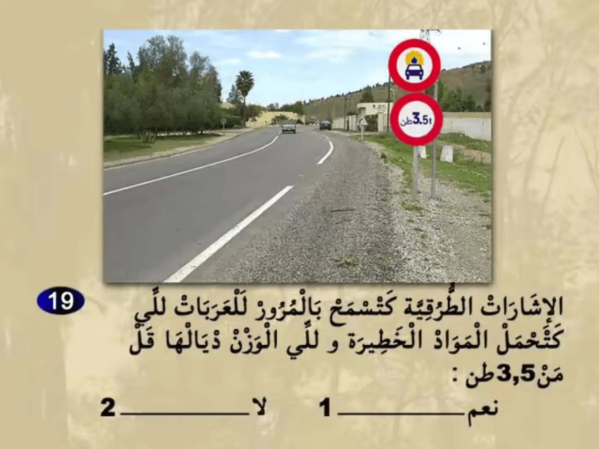
بيّن الجواب
الجواب الصحيح: 2
الإشارة الطّرقية في الأعلى فهي تعني ممنوع مرور العربات التي تحمل مواد قابل للاشتعال أو للانفجار. والإشارة الطّرقية الثانية فهي تعني أن الطّريق ممنوع على جميع أنواع السيارات التي يتجاوز مجموع وزنها مع حمولتها 3,5 طن. إذن الإشارات فهي تمنع ولا تسمح.
السؤال 20
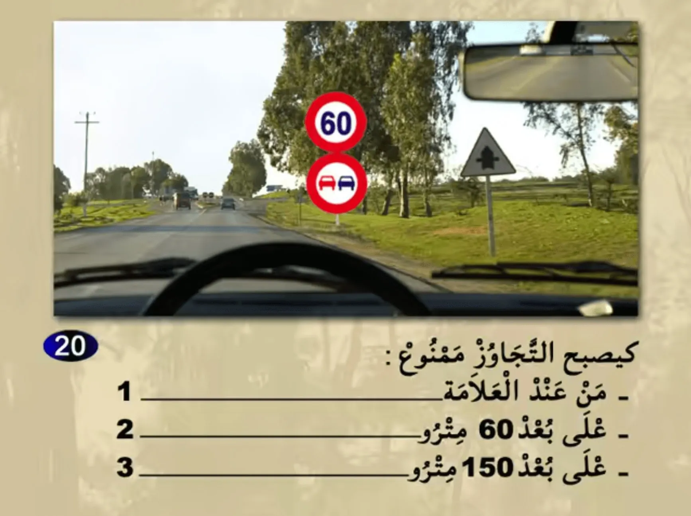
بيّن الجواب
الجواب الصحيح: 1
علامات المنع فهي علامات وضع و يتم تطبيقها إبتداء من عند العلامة (إذا لم تكن هنالك علامات تكميلية)، في هذه الحالة فالتّجاوز سوف يصبح ممنوع من عند العلامة الطّرقية.
السؤال 21
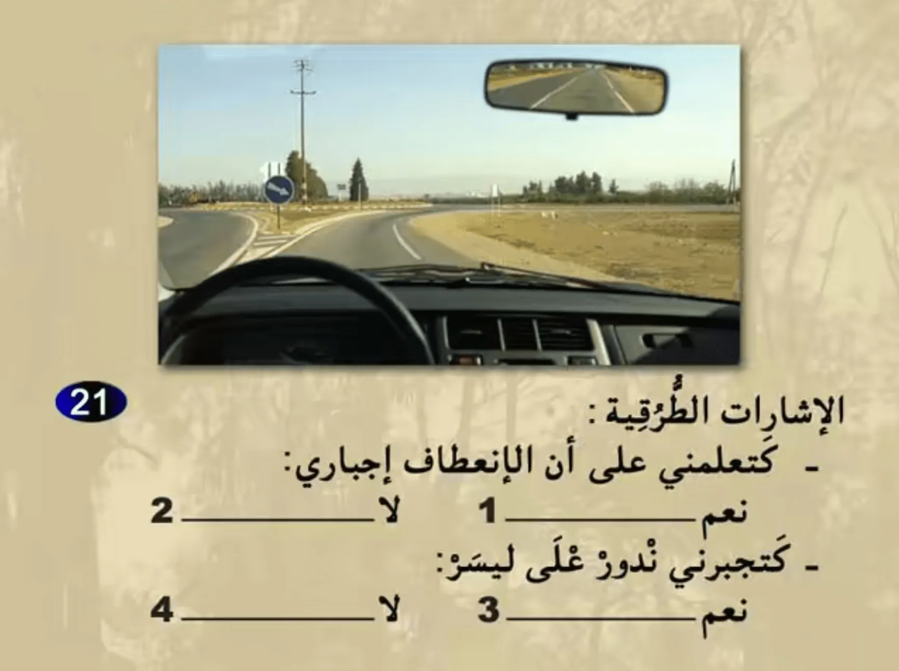
بيّن الجواب
الجواب الصحيح: 1 و 4
الإشارة الطّرقية العمودية الموضّحة في الصورة فهي تعني إنعطاف إجباري. هي تعلمني على أن الإنعطاف سوف يصبح إجباري لليمين كما يوضّحه السّهم (أي لا أستطيع إستعمال المسلك المتواجد على اليسار للسّير)، أيظا فالإشارة الطّرقية فهي لا تجبرني للإنعطاف لليسار.
السؤال 22
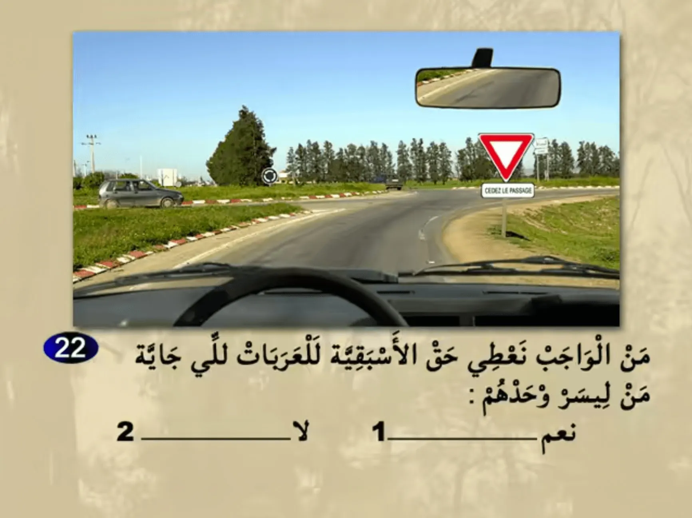
بيّن الجواب
الجواب الصحيح: 1
الإشارة الطّرقية تعني أنه ليس لي حق الأسبقية، وهذا يعني على أنه من الواجب عليّ إعطاء حق الأسبقية للعربات القادمة من الجهة اليمنى و اليسرى. لكن عندما توجد إشارة ليس لي حق الأسبقية مع إشارة المدار (رومبوان) في هذه الحالة من الواجب أن أعطي حق الأسبقية للعربات القادمة من الجهة اليسرى فقط.
السؤال 23
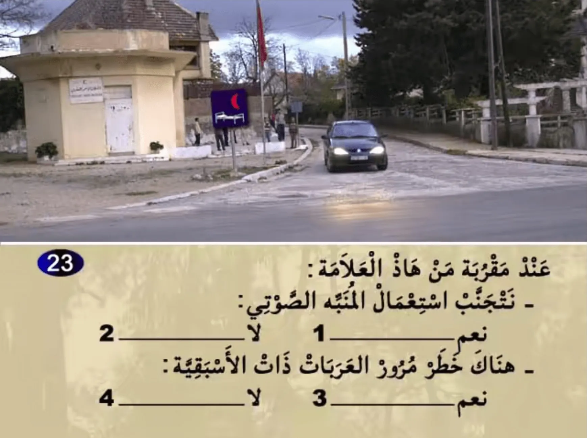
بيّن الجواب
الجواب الصحيح: 1 و 3
الإشارة الطّرقية تعني وجود مستشفى، وعندما أتواجد قرب مستشفى فممنوع عليّ إستعمال المنبّه الصوتي (حتى وإن لم تكن إشارة ممنوع إشتعمال المنبّه الصوتي موجودة)، وعندما أتواجد قرب المستشفى فإحتمال مرور عربات ذات الأسبقية كبير (مثلا مرور الإسعاف) إذن في هذه الحالة أتجنب إستعمال المنبّه الصوتي وكذلك يوجد خطر مرور عربات ذات الأسبقية.
السؤال 24
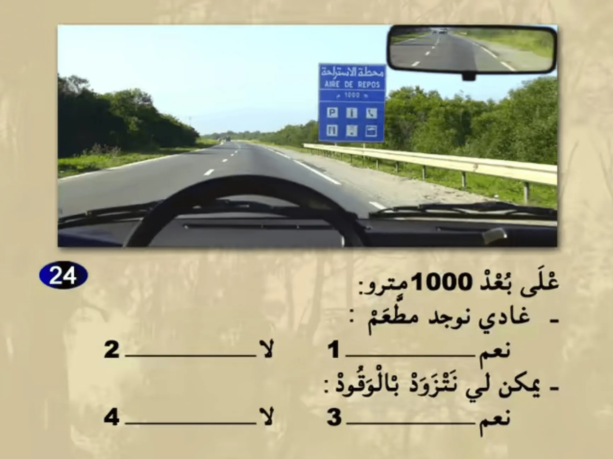
بيّن الجواب
الجواب الصحيح: 1 و 3
نتواجد في طريق سيار (الإشارات الطّرقية باللون الأزرق)، كما هو موضّح في الصورة فإنه على بعد 1000 متر سوف نجد محطة الإستراحة، وفي محطة الإستراحة سوف نجد جميع ما يلزمنا مثلا مطعم، مسجد، مقهى، محطة وقود، مراحيض، إلخ...).
السؤال 25
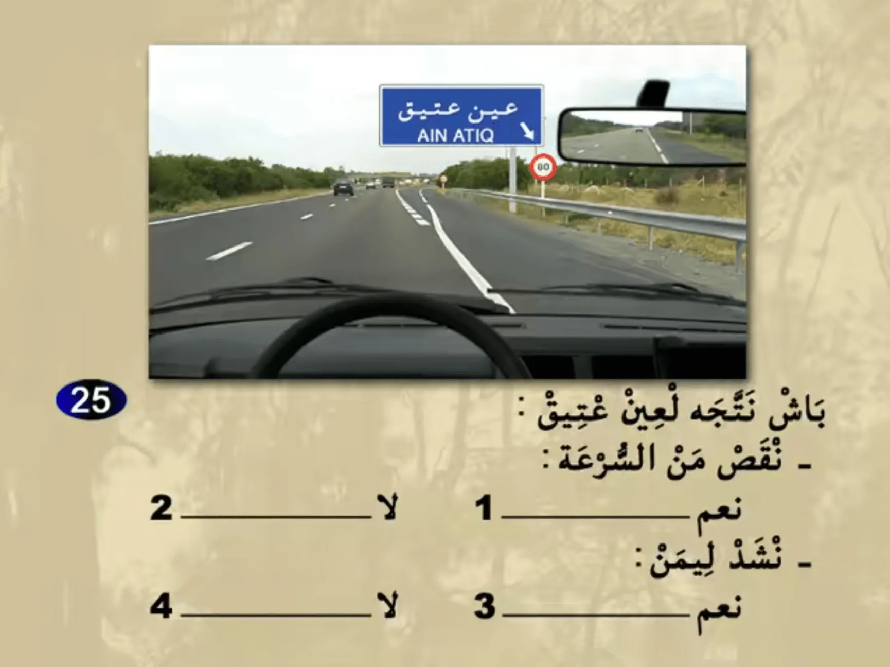
بيّن الجواب
الجواب الصحيح: 1 و 3
أتواجد في طريق سيّار كما توضحه الإشارة الطّرقية الزرقاء، أستعمل مسلك التباطئ لكي أقوم بالخروج من الطريق السيّار، ولكي أخرج فيجب عليّ بطبيعة الحال الإنقاص من السرعة بما أنني سوف أقوم بتغيير الإتّجاه وإستعمال مسلك التباطئ وأيظا أستعمل المسلك على اليمين لكي أتجه إلى عين عتيق.
السؤال 26
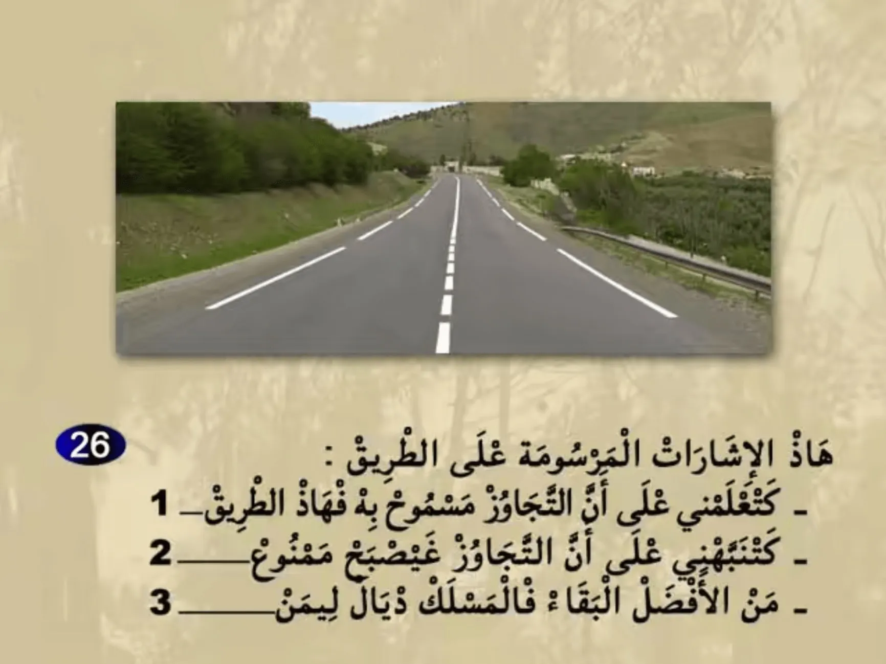
بيّن الجواب
الجواب الصحيح: 2 و 3
التشوير الأفقي الخط المرسوم على الأرض في الوسط فهو ينبّهني على أن التّجاوز سوف يصبح ممنوع، لأنه كما توضّح الصورة فالخط سوف يصبح متّصل وليس متقطّع لذلك التجاوز ممنوع، وبما أن التجاوز ممنوع إذن من الأفضل البقاء في المسلك المتواجد على اليمين الخاص بالسّير العادي.
السؤال 27
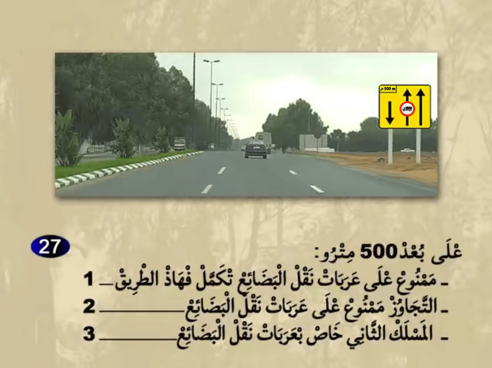
بيّن الجواب
الجواب الصحيح: 2
الإشارة الطّرقية فهي مؤقتة (لونها أصفر)ن كما توضّح الإشارة الطّرقية فإنه على بعد 500 متر فإن حركة السّير سوف تصبح بمسلكين (بالنسبة لي) ومسلك واحد بالنسبة للعربات القادمة من الإتّجاه المعاكس. المسلك في الوسط فيه إشارة المنع للشاحنات للسّير فيه، أي أن ممنوع أن تستعمله الشاحنات لكي تقوم بعملية التّجاوز. كما أن الإشارة الطّرقية لا تعني على أن الطّريق ممنوعة على عربات نقل البضائع، لأنه يمكن لعربات نقل البضائع إستعمال هذه الطّريق بشرط أن تسير في المسلك المتواجد على اليمين فقط.
السؤال 28
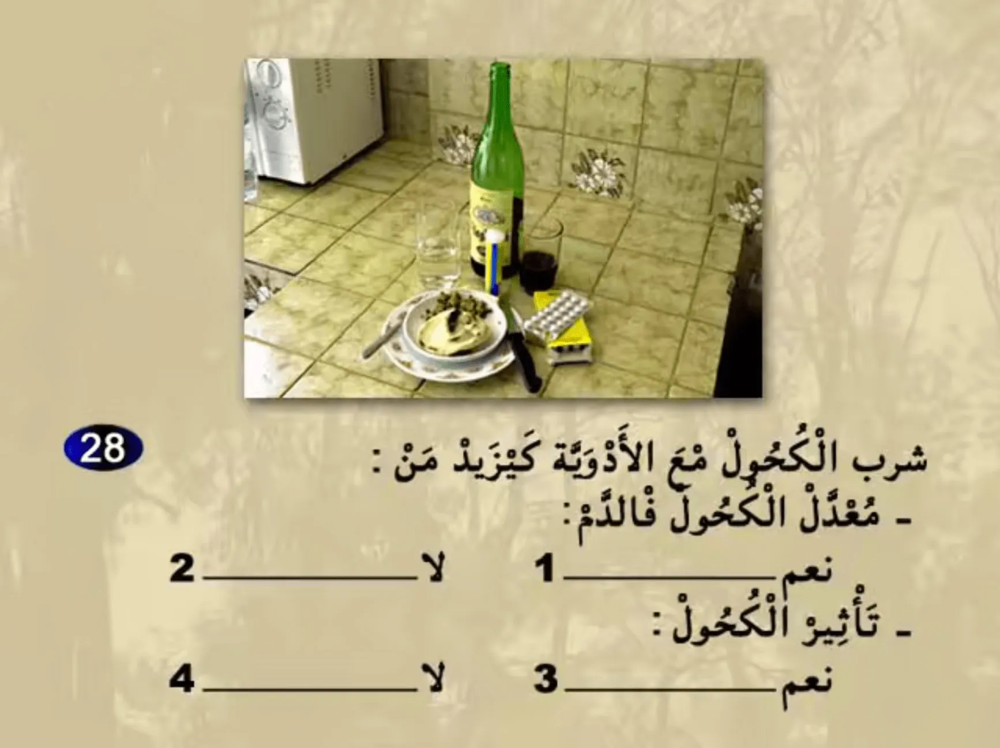
بيّن الجواب
الجواب الصحيح: 1 و 3
شرب الكحول وحده فقط يزيد معدل الكحول في الدّم، وشربه مع الأدوية يزيد معدّله أكثر لأن بعض الأدوية تحتوي على نسبة من الكحول في تركيبتها مِمّا يزيد تأثير الكحول أيظا.
السؤال 29
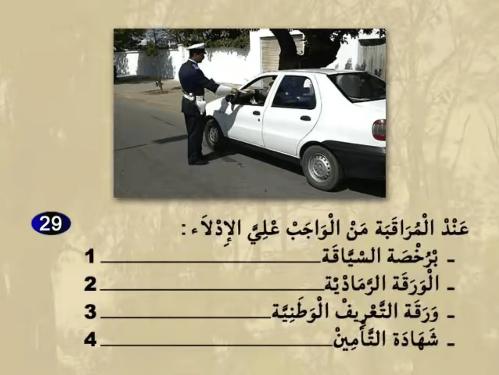
بيّن الجواب
الجواب الصحيح: 1 و 2 و 4
عند المراقبة الطّرقية من طرفي شرطي المرور فهو يطلب منّي أوراق السيّارة وهي رخصة السيّاقة، الورقة الرّمادية وشهادة التأمين.
السؤال 30
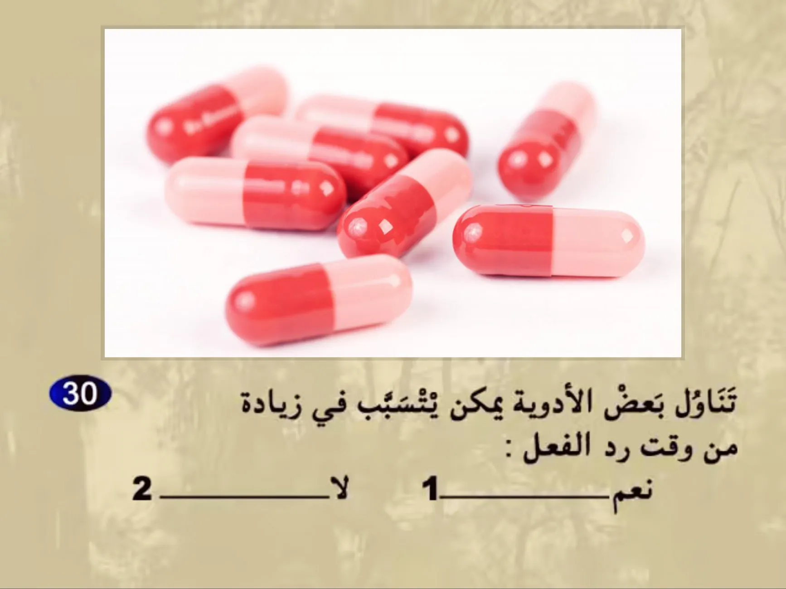
بيّن الجواب
الجواب الصحيح: 1
يُقدَّر وقت رد الفعل في المتوسّط بثانية في الحالة العادية و الطبيعية، ووقت رد الفعل يزداد كلما خرج الساىق عن حالته الطبيعية أي (تناول الادوية، حالة سكر، التعب، قلة النوم و تناول المخدرات... ) وقت رد الفعل لا ينقص أبداً عن ثانية، فهو إمّا يساوي ثانية أو أكثر من ثانية.
السؤال 31
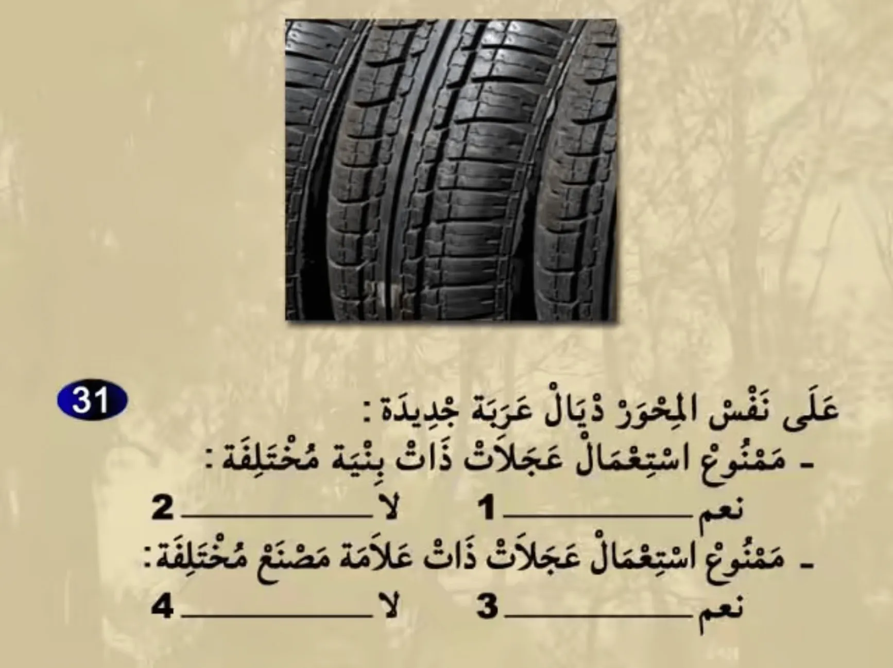
بيّن الجواب
الجواب الصحيح: 1 و 4
السيارة تحتوي على محورين للعجلات، المحور الذي يوجد في أمام السّيارة والذي يحتوي على عجلتين، والمحور الثاني الذي يوجد في الخلف والذي يحتوي على عجلتين أيظا. في نفس المحور لا يمكن أن أستعمل عجلتين مختلفتين في البنية، مثلا لو كانت عَجَلَة واحدة مقاسها 18، فيجب أن أستعمل أيظا نفس المقاس في العجلة الثانية وليس أن أتستعمل مقاس مختلف 19 أو 20 ... بالنسبة لإختلاف مَصْنَعْ العجلات (شَرِكة العجلات) فليست هنالك مشكلة في إستعمال عجلات ذات مَصْنَعْ مختلف لأن الأهم هو إستعمال عجلات بنفس البنية في نفس المحور الخاص بالعربة.
السؤال 32
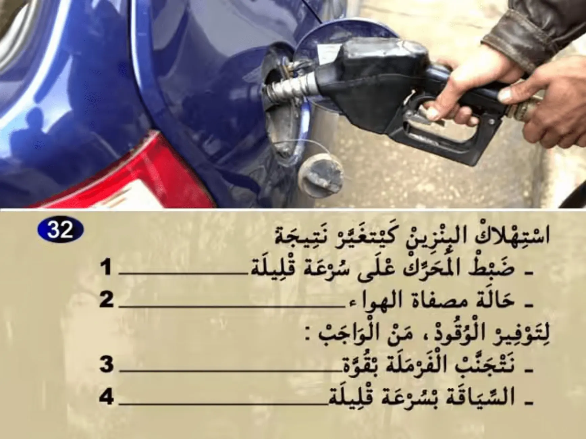
بيّن الجواب
الجواب الصحيح: 2 و 3
إستهلاك البنزين (الوقود) يتغير نتيجة حالة مصفاة الهواء (لو كانت مُتَّسِخة)، ولكي أقوم بتوفير البنزين (الوقود) يجب عليّ تجنّب إستعمال الفرامل بقوة (وبكثْرة). السياقة بسرعة قليلة ليس لها علاقة بتوفير الوقود. الإجابة الصحيحة هي رقم 2 و 3.
السؤال 33
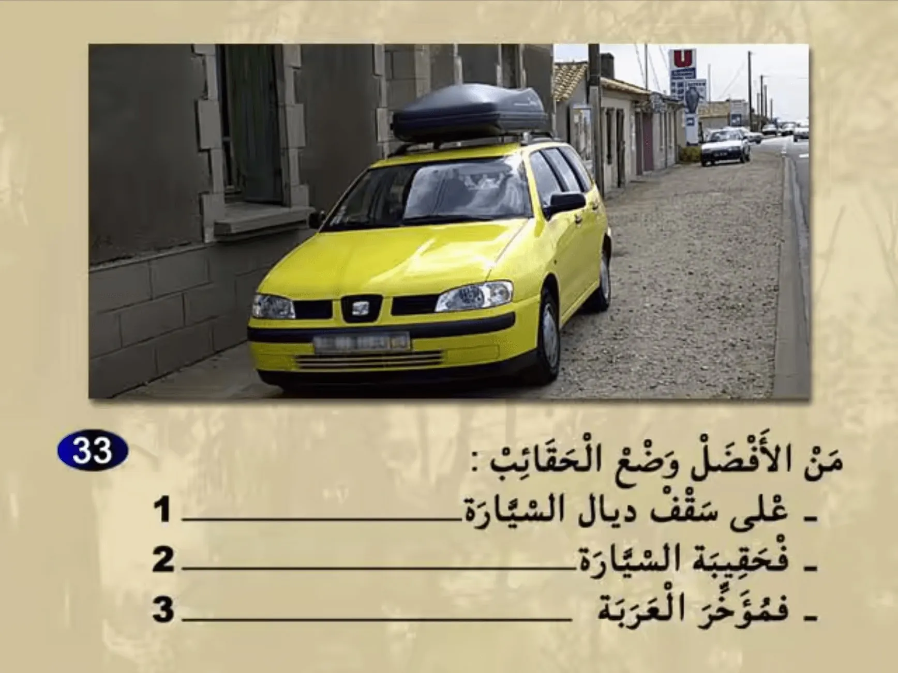
بيّن الجواب
الجواب الصحيح: 2
من الأفضل وضع الحقائب أو الحمولة في حقيبة السيّارة (حقيبة السيّارة هي المكان الموجود خلف السيّارة) (في سقف السيّارة سوف يكون إستهلاك الوقود أكثر وفي خلف العربة أي داخل العربة ولكن في الخلف فهنا يوجد خطر لو قمنا بإستعمال الفرامل بشكل قوي ومفاجئ فإنه يوجد أحتمال أن ترتمي الحمولة علينا) لذلك أفضل موضع نقوم بوضع الحمولة أو الحقائب فيه هي حقيبة السيارة.
السؤال 34
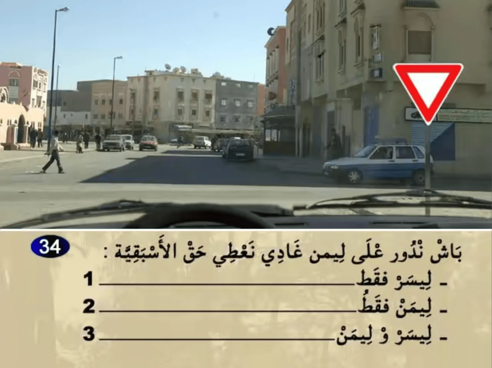
بيّن الجواب
الجواب الصحيح: 3
الإشارة الطّرقية تعني ليس لي حق الأسبقية، أي يجب عليّ إعطاء حق الأسبقية للعربات القادمة من الجهة اليمنى وكذلك العربات القادمة من الجهة اليسرى لكي أستطيع الإنعطاف لليمين.
السؤال 35
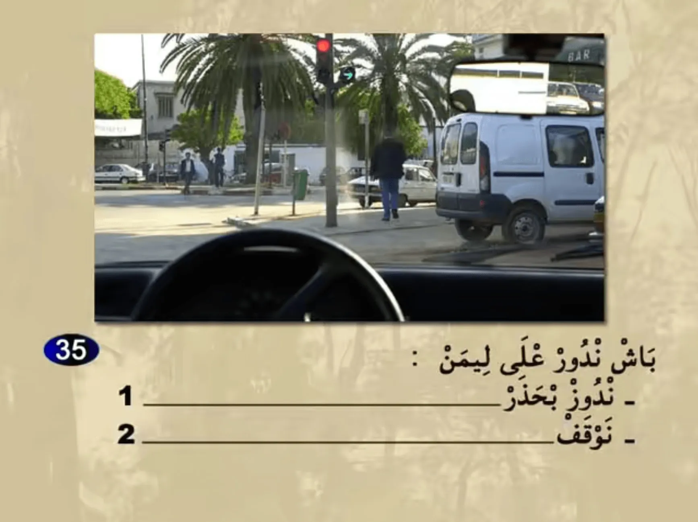
بيّن الجواب
الجواب الصحيح: 1
كما توضّح الصورة فيوجد إشارتين ضوئيتين، واحدة باللون الأحمر وهي تمنع العربات المتّجهة مباشرة أو التي تريد الإنعطاف لليسار من المرور، وإشارة ضوئية بسهم أخضر لليمين وهي تسمح للعربات التي تريد الإنعطاف لليمين من المرور. إذن في هذه الحالة بما أنني أريد الإنعطاف لليمين فيمكنني المرور بحذر لأنه يمكن مثلا أن نجد ممر للراجلين عندما ننعطف يمينا لذلك الإنعطاف لليمين يجب أن يكون بحذر.
السؤال 36
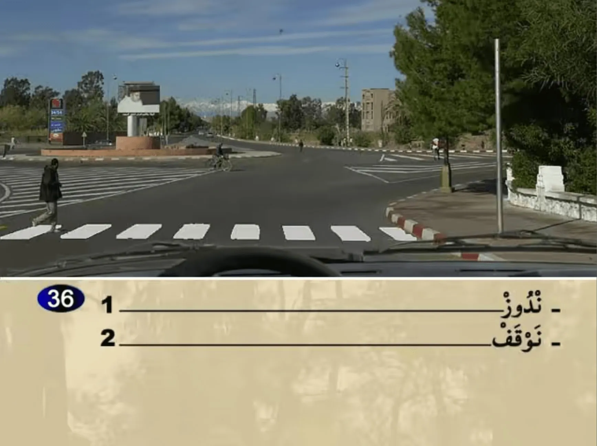
بيّن الجواب
الجواب الصحيح: 2
يوجد راجل في ممر الراجلين ولديه حق الأسبقية فيه، إذن يجب عليّ الوقوف والسماح له بالمرور.
السؤال 37
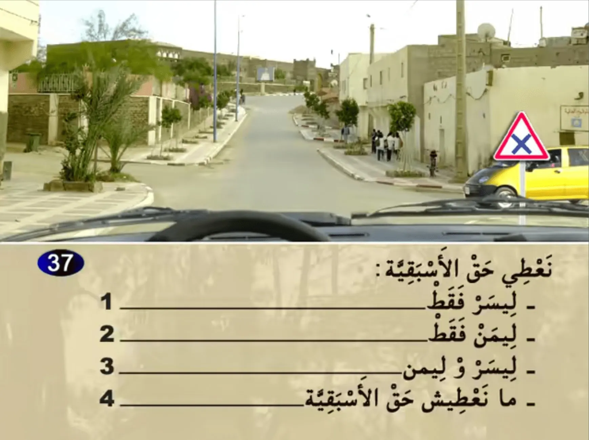
بيّن الجواب
الجواب الصحيح: 2
الإشارة الطّرقية فهي تعني إنتباه خطر ملتقى الطّرق والأسبقية للعربات القادمة من الجهة اليمنى، إذن سوف أقوم بإعطاء حق الأسبقية للعربات القادمة من الجهة اليمنى فقط.
السؤال 38
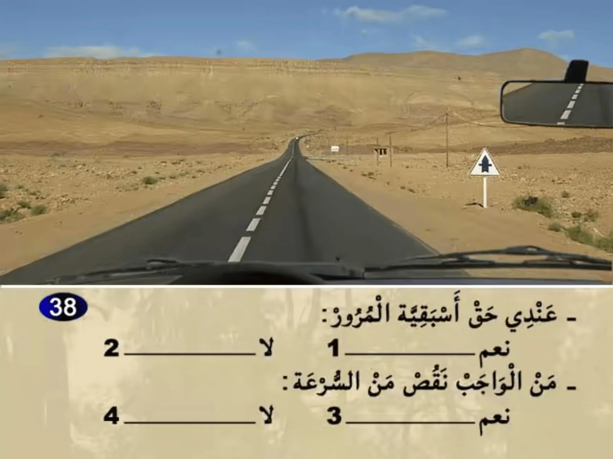
بيّن الجواب
الجواب الصحيح: 1 و 3
الإشارة الطّرقية تعني إنتباه خطر ذات أولوية المرور، أي أنه لديّ حق أسبقية المرور في ملتقى الطّرق القادم على بعد 150 متر بما أننا خارج المجال الحضري. وأيظا بما أنه يوجد خطر أي ملتقى الطّرق فمن الواجب عليّ الإنقاص من السرعة.
السؤال 39
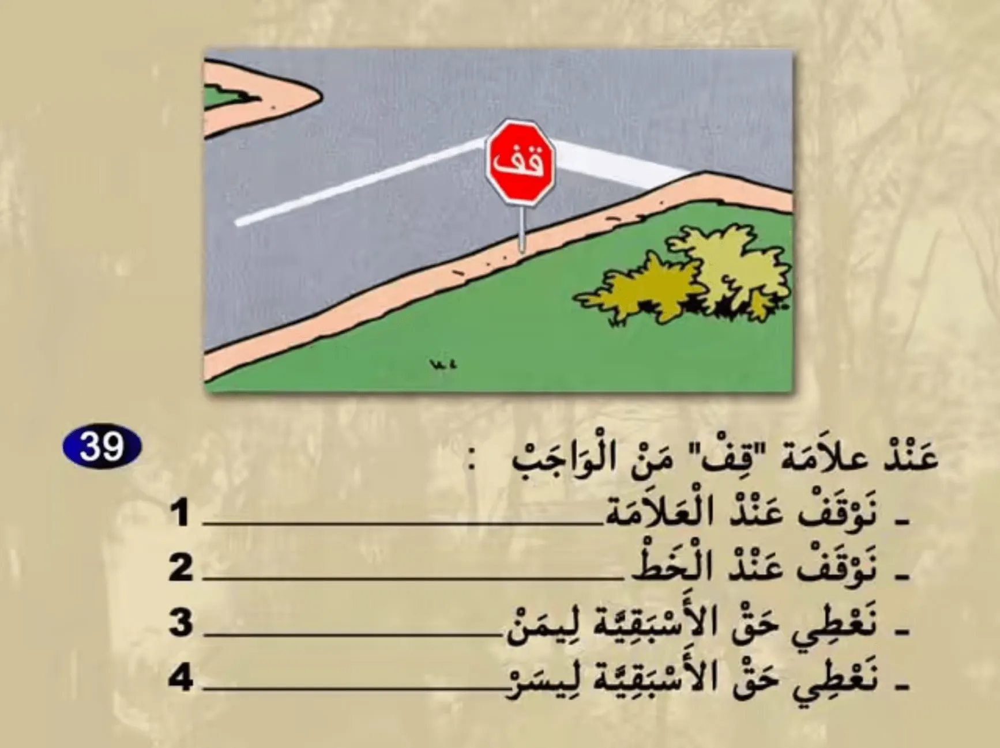
بيّن الجواب
الجواب الصحيح: 2 و 3 و 4
عند الإشارة الطّرقية قف فمن الواجب عليّ الوقوف عند الخط المرسوم على الأرض وليس عند علامة قف (الخط يعني الوقوف)، وبما أنه لديّ علامة قف فسوف أقوم بإعطاء حق الأسبقية للعربات القادمة من الجهة اليسرى وأيظا من الجهة اليمنى.
السؤال 40
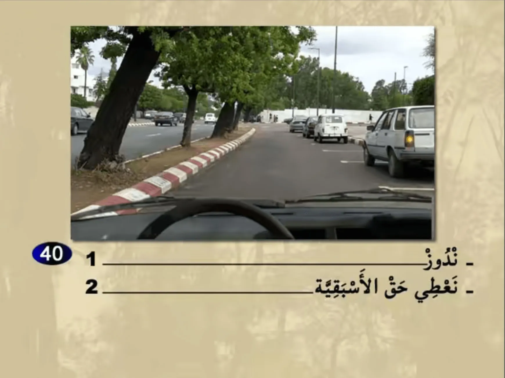
بيّن الجواب
الجواب الصحيح: 1
السيارة المتواجدة على اليمين فهي تستعمل إشارة تغيير الإتجاه لليسار وهذا معناه أنها تريد مغادرة مكان الوقوف. وبما أنها متوقفة فيجب عليها أن تنتظر مرور السيارات لكي تستطيع مغادرة مكان الوقوف، أي أنني سوف أقوم بالمرور ولا أعطي لها حق الأسبقية.